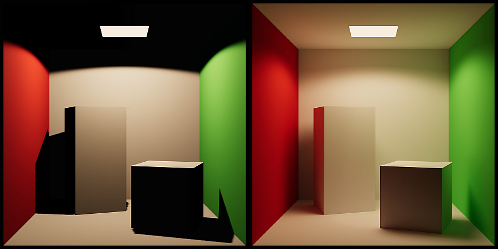

Troubleshooting no baked global illumination in the scene
Fix issues that cause baked global illuminationA group of techniques that model both direct and indirect lighting to provide realistic lighting results. See in Glossary in the sceneA Scene contains the environments and menus of your game. Think of each unique Scene file as a unique level. In each Scene, you place your environments, obstacles, and decorations, essentially designing and building your game in pieces. More info See in Glossary to fail.

Two images showing a Cornell box with two boxes. The first image has no global illumination, so the shadows appear too dark. The second image has baked global illumination, so the shadows and lights are rendered correctly.
Symptoms
Baked global illumination fails to render in the scene, resulting in less lights in the scene and making shadows and overall image appear darker then intended.
Cause
If some prerequisites are not met, Progressive LightmapperA tool in Unity that bakes lightmaps according to the arrangement of lights and geometry in your scene. More info See in Glossary might fail to generate lighting in your scene. These commonly include, but are not limited to:
No objects are marked as Global Illumination (GI) Contributors.
No baked or mixed lights in the scene.
Issues with the shadersA program that runs on the GPU. More info See in Glossary.
Resolution - Mark GameObjects as GI Contributors
To mark objects as GI Contributors, follow these steps:
Select your GameObjectThe fundamental object in Unity scenes, which can represent characters, props, scenery, cameras, waypoints, and more. A GameObject’s functionality is defined by the Components attached to it. More info See in Glossary.
In your GameObject’s InspectorA Unity window that displays information about the currently selected GameObject, asset or project settings, allowing you to inspect and edit the values. More info See in Glossary window, go to the Mesh Renderer component.
Under the Lighting header, enable Contribute to Global Illumination. This also automatically enables the Receive Global Illumination property, ensuring the object can receive baked lighting during lightmapA pre-rendered texture that contains the effects of light sources on static objects in the scene. Lightmaps are overlaid on top of scene geometry to create the effect of lighting. More info See in Glossary generation.
Receive Global Illumination contains two options:
Lightmaps: Select this option if the GameObject is a static object that should be baked directly into the lightmaps. This is ideal for larger objects or those that are part of the environment (like walls, floors, or large props). The GameObject will receive and contribute Global Illumination (GI) directly to the lightmaps.
Light ProbesLight probes store information about how light passes through space in your scene. A collection of light probes arranged within a given space can improve lighting on moving objects and static LOD scenery within that space. More info See in Glossary: Use this option for smaller, dynamic, or detailed objects that don’t need to be baked directly into lightmaps. The GameObject will instead receive GI from nearby Light Probes, while still contributing GI to the surrounding lightmaps. This helps optimize lightmap usage and reduces baking costs for objects like small props or moving items.
When a GameObject is marked as a GI contributor, the object can both receive and bounce light to other surfaces. To ensure the lighting on reflective surfaces are correct, include objects in Reflection ProbesA rendering component that captures a spherical view of its surroundings in all directions, rather like a camera. The captured image is then stored as a Cubemap that can be used by objects with reflective materials. More info See in Glossary to capture this bounced lighting information:
With the GameObject selected, go to the GameObject header in Inspector window and locate the Static Editor Flags.
Expand the Static dropdown menu to reveal additional options.
Enable Reflection Probe Static. This ensures that the GameObject is considered static for reflection probes, meaning it will be included in the cubemapA collection of six square textures that can represent the reflections in an environment or the skybox drawn behind your geometry. The six squares form the faces of an imaginary cube that surrounds an object; each face represents the view along the directions of the world axes (up, down, left, right, forward and back). More info See in Glossary captured by reflection probes.
Resolution - Check scene light properties
Inspect the properties of the your scene lights to check if they are properly set to contribute to global illumination (GI).
Only mixed and baked lightsLight components whose Mode property is set to Baked. Unity pre-calculates the illumination from Baked Lights before runtime, and does not include them in any runtime lighting calculations. More info See in Glossary can contribute to baked GI. To ensure the lights in your scene are in the correct mode, select a light and inspect their Light component. Their Mode must be set to either Mixed or Baked.
Check the other properties for other issues that can affect the ability for the scene lights to contribute to GI:
Color: Dark colors will have low or no GI contribution. Choose bright colors for lights and use the Intensity property to boost or dim them.
Intensity: The higher the intensity, the brighter the light. Ensure that your lights are bright enough for meaningful GI contribution.
Indirect Multiplier: This property controls the intensity of the indirect bounce. Make sure that it is not set to zero. Otherwise, the light will have no contribution to GI at all. Note that setting this value above one will make the lighting in your scene non-compliant with the Physically Based Rendering (PBR) standard.
Resolution - Check the Lighting Setting Asset properties
In the Lighting window (Window > Rendering > Lighting), make sure that the Lighting Settings Asset field is not blank. If there is no asset assigned, click on the New Lighting Settings button. This creates and assigns an asset, so you can edit properties in the Lighting window.
Once you have done that, check for the following issues:
Ensure that Baked Global Illumination checkbox is enabled. This enables baked GI computations. This checkbox will also expose the Lighting Mode dropdown.
Check that the Max Bounces value is not set to zero. The higher this value, the more the light will bounce around the environment.
Check that the Indirect Intensity slider is not set to zero. Setting this slider to zero will diminish all indirect lighting in the scene.
Resolution - Inspect shaders and materials
Custom shaders can cause the GI computation to fail. To determine if custom shaders are the cause, use the Editor’s built-in shaders to debug the issue.
Select one of the built-in shaders:
Standard shader: Available in the built-in render pipelineA series of operations that take the contents of a Scene, and displays them on a screen. Unity lets you choose from pre-built render pipelines, or write your own. More info See in Glossary.
Lit shader: Available in the Universal Render Pipeline.
Lit shader: Available in the High-Definition Render Pipeline.
If Unity is able to generate lighting after switching to one of the shaders above, then your custom shaders may be causing the issue. Ensure that your surface shadersA streamlined way of writing shaders for the Built-in Render Pipeline. More info See in Glossary contain the LIGHTMAP_ON shader keyword before checking GI computation again.
Select a different lightmapping backend in the Lighting window. If lighting fails to bake when using the Progressive GPU, but succeeds when baking with the Progressive CPU, this might be a result of a hardware or driver problem.
Update the GPU drivers. Refer to the GPU manufacturer’s page for the correct drivers for your system. For Linux machines, refer to the Linux driver setup instructions.
Ensure that your GPU meets the minimum requirements, refer to this discussion for further details.
Clear the GI Cache. To clear it, navigate to Preferences > GI Cache and select the Clean Cache button. Note: This will delete all lighting data present in the scene, requiring you to regenerate the lighting.